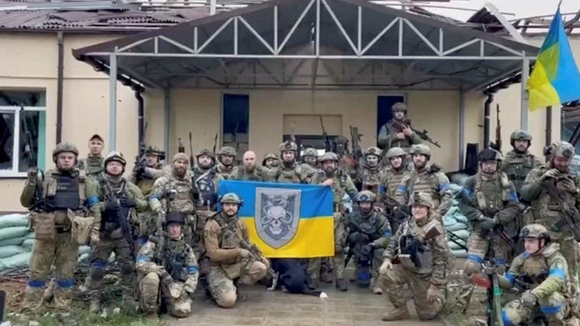

Volodymyr Zelensky said troops have now retaken more than 6,000 sq km
(2,317 sq miles) from Russian
control
in September, in the east and the south.
Ukraine war: We've retaken 6,000 sq km from Russia, says Zelensky
Ukrainian forces have seized even more territory from Russia as they continue their counter-offensive, the country's president has said.
The BBC cannot verify these figures.
Russia has admitted losing key cities in the north-eastern Kharkiv region, in
what is seen by some
military
experts as a potential breakthrough in the war.
Moscow describes its troop withdrawal from the region in recent days as a
"regrouping" with the aim
of
focusing on the Luhansk and Donetsk regions in
Ukraine's east.
That claim has been ridiculed even in Russia, with many social media users
there describing the
stated
pull-out as "shameful".
Speaking later on Monday, US Secretary of State Antony Blinken said
Ukrainian forces had
made
"significant progress" in their counter-offensive,
but added that it was too early to predict the
outcome
"The Russians maintain very significant forces in Ukraine as well as equipment
and arms and munitions.
They
continue to use it indiscriminately against not
just the Ukrainian armed forces but civilians and
civilian infrastructure as
we've seen," Mr Blinken said.
Russian President Vladimir Putin ordered a full-scale invasion of Ukraine on 24
February. Russia still
holds
about a fifth of the country.
You can read also
In his late video address on Monday, President Zelensky said: "From the
beginning of September until
today,
our warriors have already liberated more
than 6,000 sq km of the territory of Ukraine - in the east and
south".
"The movement of our troops continues," he said.
The counter-offensive appears to have been rapid. Last Thursday, President
Zelensky said Ukrainian
forces
had retaken 1,000 sq km, but by Sunday that
stated figure had tripled to 3,000 sq
km.
Mr Zelensky thanked several of Ukraine's brigades involved in the counter-
offensive, describing their
fighters as "true heroes".
He did not reveal which Ukrainian cities and villages had been liberated

Ukrainian troops pose with flags in a village retaken from Russian control in the north-eastern Kharkiv region
Russia's military earlier admitted that its troops had to leave the key cities of
Balakliya, Izyum and
Kupiansk in the Kharkiv region. Russia now controls only
a small eastern part of the region.
Significant - albeit slower - advances by Ukrainian troops have also been
reported in the southern
Kherson region, which borders with Crimea - a
Ukrainian peninsula annexed by Russia in 2014.
UK defence officials say the Ukrainian army's recent successes will have
"significant implications" for
Russia's overall operational design.
However, Kremlin spokesman Dmitry Peskov has insisted that military
operations in Ukraine will continue
"until all the tasks that were initially set"
have been fulfilled.
Russia says its forces have been carrying out strikes in those areas retaken by
Ukraine in recent days.
Valerii Marchenko, mayor of Izyum, told the BBC the Ukrainian army was in his
city and the state flag
had
been raised.
The military is now engaged in cleaning up the war-torn city and Ukrainian
forces are searching for
Russian soldiers potentially hiding in people's houses.
Mr Marchenko said that after "about 10 days", residents who had to flee the
city would be able to
return
"safely".
Russia has been accused of targeting civilian infrastructure in revenge for
setbacks on the
battlefield.
A wave of missile strikes on Sunday caused massive power cuts across north-
eastern Ukraine, leaving
tens of
thousands of people without electricity and
running water for several hours.
Ukraine answers crucial questions
The Ukrainians believe they've answered important questions. Can they break
the stalemate and recapture
territory? Yes. Can they use Western weapons
effectively? Yes. The result is their most important
victory since winning the
battle for Kyiv back in March
This matters because without proof they can win, they fear that the economic
costs of supporting
Ukraine and opposing Russia might be too much for some
of their NATO allies, especially over a long,
hard winter.
As for the Russians, this was a rout. Not a fighting retreat or a redeployment.
Military intelligence
failed and soldiers with catastrophically poor morale
abandoned large amounts of equipmen
The Ukrainians know what they're fighting for - it is not clear that the Russians
do.